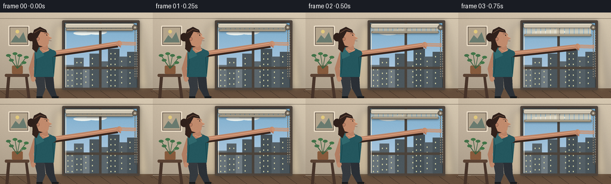
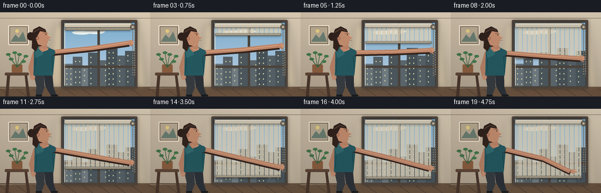
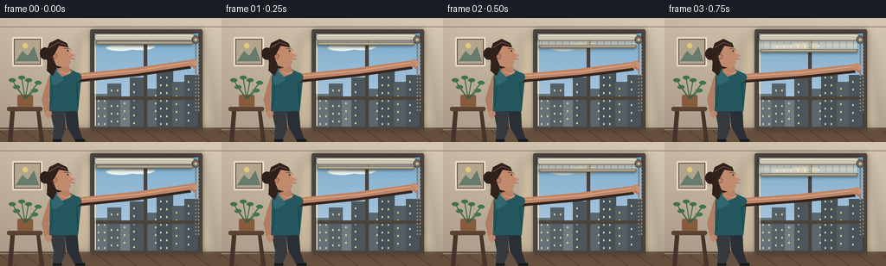

CODING AGENTS AS PIXEL WORLD MODELS
traex/GPT-5.6-Sol · motion_rationality_0056
点击播放 · 原生 RGB 像素
逐轮保存的候选
回放视频、检查图与代码变化。
每份候选均可单独播放。实际图片检查记录在下方工具轨迹中。
候选 01播放与检查图
点击播放 · 原生 RGB 像素

展开代码变化
--- 上一保存版本
+++ 本次保存版本
@@ -0,0 +1,231 @@
+from pathlib import Path
+import json, math
+import numpy as np
+from PIL import Image, ImageDraw, ImageFilter
+import artifact_io
+
+CASE_DIR = Path(__file__).resolve().parent
+spec = json.loads((CASE_DIR / "task_spec.json").read_text())
+W, H, N = spec["width"], spec["height"], spec["frames"]
+S = 4
+SW, SH = W*S, H*S
+
+# Drawing helpers in logical 256x144 coordinates.
+def q(v): return int(round(v*S))
+def box(b): return tuple(q(v) for v in b)
+def pts(p): return [(q(x), q(y)) for x,y in p]
+def smooth(x):
+ x=max(0.0,min(1.0,x)); return x*x*(3-2*x)
+
+def ellipse(d, b, fill, outline=None, width=1):
+ d.ellipse(box(b), fill=fill, outline=outline, width=q(width) if outline else 1)
+def line(d, p, fill, width=1, joint="curve"):
+ d.line(pts(p), fill=fill, width=q(width), joint=joint)
+def poly(d, p, fill, outline=None): d.polygon(pts(p), fill=fill, outline=outline)
+def rounded(d,b,r,fill,outline=None,width=1):
+ d.rounded_rectangle(box(b),radius=q(r),fill=fill,outline=outline,width=q(width))
+
+def gradient_base():
+ im=Image.new("RGB",(SW,SH)); a=np.empty((SH,SW,3),dtype=np.uint8)
+ yy=np.linspace(0,1,SH)[:,None]
+ xx=np.linspace(0,1,SW)[None,:]
+ # warm, softly illuminated interior wall
+ a[:,:,0]=np.clip(203-35*yy+13*xx,0,255)
+ a[:,:,1]=np.clip(188-34*yy+14*xx,0,255)
+ a[:,:,2]=np.clip(166-31*yy+13*xx,0,255)
+ return Image.fromarray(a)
+
+STATIC_NOISE=np.random.default_rng(9).normal(0,0.65,(H,W,1))
+
+def draw_soft_shadow(im, shape, blur=4, alpha=75):
+ ov=Image.new("RGBA",(SW,SH),(0,0,0,0)); od=ImageDraw.Draw(ov)
+ shape(od)
+ ov=ov.filter(ImageFilter.GaussianBlur(q(blur)))
+ im.alpha_composite(ov)
+
+def frame_at(i):
+ # Pull occupies most of the shot; a short release/settle closes the action.
+ raw=min(i/15.0,1.0)
+ p=smooth(raw)
+ release=smooth((i-15)/4.0) if i>15 else 0.0
+ # Slight realistic overshoot of the bottom bar as the hand reaches the end.
+ settle=1.4*math.sin(math.pi*max(0,min(1,(i-14)/5))) if i>=14 else 0
+ blind_bottom=28 + 88*p + settle
+ hand_y=52 + 48*p
+ hand_x=201 + 1.5*p
+ if release:
+ hand_x=202.5-17*release
+ hand_y=100+7*release
+
+ im=gradient_base().convert("RGBA")
+ d=ImageDraw.Draw(im,"RGBA")
+
+ # Ceiling line and left framed picture establish a quiet home interior.
+ line(d,[(0,10),(256,10)],(132,119,102,80),.7)
+ rounded(d,(14,22,49,56),1.5,(91,78,67,255),(236,222,200,210),2)
+ rounded(d,(17,25,46,53),.5,(180,165,141,255))
+ poly(d,[(18,50),(26,38),(32,44),(39,33),(45,50)],(105,123,111,255))
+ ellipse(d,(26,29,32,35),(225,201,125,230))
+
+ # Floor / baseboard.
+ line(d,[(0,128),(256,128)],(98,80,64,150),2)
+ poly(d,[(0,130),(256,127),(256,144),(0,144)],(104,81,62,255))
+ for x in range(0,257,28): line(d,[(x,131),(x+18,144)],(66,51,42,35),.5)
+
+ # Window glow projected onto wall dims as the blind closes.
+ glow_alpha=int(62*(1-.67*p))
+ glow=Image.new("RGBA",(SW,SH),(0,0,0,0)); gd=ImageDraw.Draw(glow,"RGBA")
+ poly(gd,[(94,20),(236,19),(250,130),(73,130)],(255,229,176,glow_alpha))
+ glow=glow.filter(ImageFilter.GaussianBlur(q(6)))
+ im.alpha_composite(glow); d=ImageDraw.Draw(im,"RGBA")
+
+ # Window shadow and deep frame.
+ draw_soft_shadow(im, lambda sd: sd.rounded_rectangle(box((105,14,234,130)),radius=q(2),fill=(32,26,22,115)), 3, 80)
+ d=ImageDraw.Draw(im,"RGBA")
+ rounded(d,(104,13,234,130),2,(78,68,60,255))
+ rounded(d,(108,17,230,126),.8,(49,58,63,255))
+
+ # Outdoor scene: sky gradient and distant city, visible beneath the descending blind.
+ for y in range(18,126):
+ t=(y-18)/108
+ line(d,[(109,y),(229,y)],(125+int(65*t),174+int(35*t),205+int(25*t),255),1)
+ # soft clouds
+ ellipse(d,(123,31,155,38),(235,241,237,125)); ellipse(d,(145,28,179,37),(239,244,240,100))
+ # distant skyline
+ buildings=[(109,88,126,126,104),(124,76,140,126,86),(139,91,151,126,112),(150,69,169,126,76),
+ (168,82,182,126,91),(181,61,200,126,70),(199,74,214,126,84),(213,66,229,126,73)]
+ for x1,y1,x2,y2,c in buildings:
+ d.rectangle(box((x1,y1,x2,y2)),fill=(c,c+11,c+17,255))
+ for wy in range(y1+7,y2-3,9):
+ for wx in range(x1+4,x2-2,7):
+ if (wx+wy+i*0)%3: d.rectangle(box((wx,wy,wx+1.4,wy+2)),fill=(207,207,164,130))
+ # Window mullions.
+ d.rectangle(box((166,17,170,126)),fill=(74,67,60,255))
+ d.rectangle(box((108,91,230,95)),fill=(76,68,60,255))
+ line(d,[(110,18),(110,125)],(246,229,204,115),1)
+
+ # Roller blind body. It is lightly translucent, retaining vague exterior bands.
+ if blind_bottom > 27.5:
+ shade=Image.new("RGBA",(SW,SH),(0,0,0,0)); sd=ImageDraw.Draw(shade,"RGBA")
+ sd.rectangle(box((112,24,222,blind_bottom)),fill=(221,211,188,238))
+ # Fine woven texture + horizontal folds make the moving object readable.
+ for y in np.arange(26,blind_bottom,2.15):
+ alpha=20 if int(y*2)%2 else 12
+ line(sd,[(113,y),(221,y)],(112,103,89,alpha),.35)
+ # Gentle vertical light variation.
+ for x in range(114,222,8): line(sd,[(x,25),(x,blind_bottom)],(255,251,235,18),1)
+ im.alpha_composite(shade); d=ImageDraw.Draw(im,"RGBA")
+
+ # Top roller/cassette and weighted moving bottom bar.
+ draw_soft_shadow(im, lambda sd: sd.rectangle(box((109,17,225,27)),fill=(0,0,0,90)), 2.2, 80)
+ d=ImageDraw.Draw(im,"RGBA")
+ rounded(d,(109,18,225,26),3,(205,196,177,255),(105,96,83,220),.7)
+ line(d,[(112,20),(222,20)],(247,239,220,180),.8)
+ draw_soft_shadow(im, lambda sd: sd.rectangle(box((111,blind_bottom,223,blind_bottom+3.5)),fill=(0,0,0,120)), 1.8, 90)
+ d=ImageDraw.Draw(im,"RGBA")
+ rounded(d,(110.5,blind_bottom-1,223,blind_bottom+2.5),1.2,(156,145,125,255),(86,79,68,210),.55)
+ line(d,[(113,blind_bottom-.2),(221,blind_bottom-.2)],(231,220,198,180),.55)
+
+ # Beaded loop/chain: right strand is taut in the person's grasp.
+ chain_x=226.2
+ chain_bottom=111
+ line(d,[(chain_x,25),(chain_x,chain_bottom-3)],(84,78,68,210),.8)
+ line(d,[(229.5,27),(229.5,chain_bottom-3)],(102,95,84,160),.65)
+ # loop curve
+ d.arc(box((chain_x-0.2,chain_bottom-8,230.1,chain_bottom+1)),0,180,fill=(82,76,67,210),width=q(.7))
+ bead_offset=(p*4.1)%4.1
+ for yy in np.arange(29+bead_offset,chain_bottom-3,4.1): ellipse(d,(225.35,yy-0.85,227.05,yy+0.85),(174,163,144,255),(72,66,58,170),.3)
+ for yy in np.arange(29+(4.1-bead_offset),chain_bottom-3,4.1): ellipse(d,(228.75,yy-.7,230.15,yy+.7),(158,148,132,220))
+ ellipse(d,(221.5,20.5,230.6,29.4),(119,109,95,255),(65,59,52,220),.7)
+ ellipse(d,(224.5,23.4,227.7,26.6),(201,190,170,255))
+
+ # Side table and plant in foreground, partially obscured by the person.
+ rounded(d,(8,103,49,108),2,(91,67,52,255))
+ poly(d,[(12,108),(17,108),(14,144),(9,144)],(72,53,43,255)); poly(d,[(42,108),(46,108),(51,144),(46,144)],(72,53,43,255))
+ rounded(d,(20,89,38,103),2,(135,91,61,255))
+ for k,(x2,y2) in enumerate([(14,72),(25,69),(33,72),(44,75),(19,80),(40,84)]):
+ line(d,[(29,94),(x2,y2)],(55,95,63,230),1.1)
+ ellipse(d,(x2-4,y2-2.2,x2+4,y2+2.2),(66,113+5*(k%2),72,235))
+
+ # Person: small torso lean toward the chain while pulling.
+ lean=1.8*math.sin(math.pi*raw)
+ bob=.7*math.sin(math.pi*raw)
+ # legs behind torso
+ poly(d,[(57+lean,105),(74+lean,104),(76,128),(70,143),(61,143),(62,126)],(53,58,63,255))
+ poly(d,[(74+lean,104),(89+lean,104),(91,127),(96,143),(87,143),(77,126)],(43,48,54,255))
+ line(d,[(61,142),(71,142)],(24,27,29,255),3); line(d,[(87,142),(98,142)],(24,27,29,255),3)
+
+ # Back arm resting at side.
+ line(d,[(60+lean,68),(52+lean,94),(56+lean,113)],(178,126,99,255),8)
+ ellipse(d,(52+lean,107,59+lean,116),(190,137,108,255))
+
+ # Shirt torso, seams and collar.
+ poly(d,[(58+lean,62+bob),(77+lean,57+bob),(94+lean,66),(90+lean,108),(57+lean,108)],(36,87,94,255))
+ poly(d,[(58+lean,63),(67+lean,58),(74+lean,72),(61+lean,78)],(48,104,109,255))
+ line(d,[(61+lean,78),(59+lean,103)],(22,67,74,160),.7)
+ line(d,[(88+lean,72),(90+lean,103)],(19,63,69,130),.8)
+ # Neck
+ poly(d,[(68+lean,55),(79+lean,53),(82+lean,64),(72+lean,68),(66+lean,62)],(185,130,102,255))
+ line(d,[(70+lean,62),(77+lean,65),(83+lean,61)],(228,171,136,130),.7)
+
+ # Pulling arm anatomy: shoulder -> elbow -> wrist; elbow lowers as the hand pulls.
+ shoulder=(88+lean,68+bob)
+ elbow=(137+1.2*p,61+24*p)
+ wrist=(hand_x-5,hand_y)
+ # cast arm shadow for depth
+ line(d,[(shoulder[0]+1,shoulder[1]+2),(elbow[0]+1,elbow[1]+2),(wrist[0]+1,wrist[1]+2)],(55,37,30,90),9)
+ line(d,[shoulder,elbow,wrist],(190,134,105,255),7.2)
+ line(d,[(shoulder[0],shoulder[1]-1),elbow,(wrist[0],wrist[1]-1)],(226,168,132,120),1.2)
+ ellipse(d,(82+lean,63+bob,94+lean,74+bob),(38,88,95,255))
+
+ # Head in right-facing profile.
+ # hair mass first, including bun/ponytail
+ ellipse(d,(53+lean,27+bob,80+lean,58+bob),(51,35,29,255))
+ ellipse(d,(46+lean,34+bob,58+lean,48+bob),(47,32,27,255))
+ poly(d,[(55+lean,43),(54+lean,61),(61+lean,67),(67+lean,54)],(50,34,28,255))
+ # face/forehead/nose/chin profile
+ poly(d,[(65+lean,29+bob),(75+lean,30+bob),(82+lean,36+bob),(82+lean,40+bob),
+ (87+lean,43+bob),(82+lean,46+bob),(81+lean,53+bob),(75+lean,58+bob),
+ (65+lean,55+bob),(61+lean,45+bob)],(194,139,109,255))
+ # nose highlight and facial features
+ line(d,[(79+lean,36+bob),(82+lean,40+bob),(86+lean,42+bob)],(231,175,137,170),.8)
+ line(d,[(82+lean,47+bob),(86+lean,47.4+bob)],(115,70,60,220),.7)
+ ellipse(d,(77.5+lean,37+bob,79.2+lean,38.5+bob),(44,36,32,255))
+ line(d,[(74+lean,35+bob),(80+lean,35.5+bob)],(73,45,35,220),.8)
+ ellipse(d,(61+lean,41+bob,66+lean,47+bob),(188,128,101,255),(112,73,58,160),.5)
+ # swept hair cap/highlight
+ poly(d,[(54+lean,38),(57+lean,29),(67+lean,24),(77+lean,29),(79+lean,34),(68+lean,32),(62+lean,43)],(48,33,28,255))
+ line(d,[(57+lean,34),(67+lean,28),(76+lean,31)],(105,75,58,120),1)
+
+ # Hand gripping then releasing chain, painted last for unequivocal interaction.
+ if release < .45:
+ # palm around strand, fingers curl visibly to its far side
+ ellipse(d,(hand_x-6,hand_y-4.8,hand_x+3.2,hand_y+4.8),(196,140,109,255))
+ for j in range(3):
+ yy=hand_y-2.5+j*2.1
+ line(d,[(hand_x-1,yy),(chain_x+1.8,yy+.7)],(204,148,115,255),1.65)
+ line(d,[(hand_x-3,hand_y+2),(hand_x+1,hand_y+6)],(181,120,94,255),2)
+ else:
+ # Opening hand moves away after completing the pull.
+ ellipse(d,(hand_x-4.2,hand_y-3.5,hand_x+3.5,hand_y+3.8),(196,140,109,255))
+ for j,dy in enumerate([-4,-2,0,2]):
+ line(d,[(hand_x+1,hand_y+dy*.45),(hand_x+5+j*.7,hand_y+dy)],(202,146,113,255),1.15)
+
+ # Overall room darkens subtly as bright exterior is covered, while preserving skin color.
+ dark=int(16*p)
+ if dark:
+ veil=Image.new("RGBA",(SW,SH),(24,30,34,dark))
+ # Do not apply heavily; perceptual cue only.
+ im.alpha_composite(veil)
+
+ # A restrained vignette gives depth without obscuring the action.
+ arr=np.asarray(im.convert("RGB").resize((W,H),Image.Resampling.LANCZOS)).astype(np.float32)
+ yy,xx=np.mgrid[0:H,0:W]
+ rr=((xx-W*.52)/(W*.72))**2+((yy-H*.48)/(H*.88))**2
+ vig=np.clip((rr-.48)*8,0,13)[...,None]
+ arr=arr-vig+STATIC_NOISE
+ return np.clip(arr,0,255).astype(np.uint8)
+
+frames=np.stack([frame_at(i) for i in range(N)],axis=0)
+artifact_io.save(frames, CASE_DIR)
+print(f"saved {frames.shape} RGB frames")
候选 02播放与检查图
点击播放 · 原生 RGB 像素


展开代码变化
--- 上一保存版本
+++ 本次保存版本
@@ -52,9 +52,9 @@
settle=1.4*math.sin(math.pi*max(0,min(1,(i-14)/5))) if i>=14 else 0
blind_bottom=28 + 88*p + settle
hand_y=52 + 48*p
- hand_x=201 + 1.5*p
+ hand_x=224.0 + 1.0*p
if release:
- hand_x=202.5-17*release
+ hand_x=225.0-17*release
hand_y=100+7*release
im=gradient_base().convert("RGBA")
@@ -170,7 +170,7 @@
# Pulling arm anatomy: shoulder -> elbow -> wrist; elbow lowers as the hand pulls.
shoulder=(88+lean,68+bob)
- elbow=(137+1.2*p,61+24*p)
+ elbow=(157+1.2*p,61+24*p)
wrist=(hand_x-5,hand_y)
# cast arm shadow for depth
line(d,[(shoulder[0]+1,shoulder[1]+2),(elbow[0]+1,elbow[1]+2),(wrist[0]+1,wrist[1]+2)],(55,37,30,90),9)
可观测工具轨迹
实际执行的命令与返回图片。
命令 1exit 0
/bin/bash -lc "cat prompt.txt && printf '\\n---RULES---\\n' && cat GENERATION_RULES.md && printf '\\n---SPEC---\\n' && cat task_spec.json"
命令 2exit 0
/bin/bash -lc "find . -maxdepth 2 -type f -printf '%p\\n' | sort && printf '\\nTools:\\n' && command -v ffmpeg || true && command -v blender || true && command -v python3 || true"
命令 3exit 0
/bin/bash -lc 'cat artifact_io.py'
命令 4exit 0
/bin/bash -lc "cat > generate.py <<'PY'
from pathlib import Path
import json, math
import numpy as np
from PIL import Image, ImageDraw, ImageFilter
import artifact_io
CASE_DIR = Path(__file__).resolve().parent
spec = json.loads((CASE_DIR / \"task_spec.json\").read_text())
W, H, N = spec[\"width\"], spec[\"height\"], spec[\"frames\"]
S = 4
SW, SH = W*S, H*S
# Drawing helpers in logical 256x144 coordinates.
def q(v): return int(round(v*S))
def box(b): return tuple(q(v) for v in b)
def pts(p): return [(q(x), q(y)) for x,y in p]
def smooth(x):
x=max(0.0,min(1.0,x)); return x*x*(3-2*x)
def ellipse(d, b, fill, outline=None, width=1):
d.ellipse(box(b), fill=fill, outline=outline, width=q(width) if outline else 1)
def line(d, p, fill, width=1, joint=\"curve\"):
d.line(pts(p), fill=fill, width=q(width), joint=joint)
def poly(d, p, fill, outline=None): d.polygon(pts(p), fill=fill, outline=outline)
def rounded(d,b,r,fill,outline=None,width=1):
d.rounded_rectangle(box(b),radius=q(r),fill=fill,outline=outline,width=q(width))
def gradient_base():
im=Image.new(\"RGB\",(SW,SH)); a=np.empty((SH,SW,3),dtype=np.uint8)
yy=np.linspace(0,1,SH)[:,None]
xx=np.linspace(0,1,SW)[None,:]
# warm, softly illuminated interior wall
a[:,:,0]=np.clip(203-35*yy+13*xx,0,255)
a[:,:,1]=np.clip(188-34*yy+14*xx,0,255)
a[:,:,2]=np.clip(166-31*yy+13*xx,0,255)
return Image.fromarray(a)
STATIC_NOISE=np.random.default_rng(9).normal(0,0.65,(H,W,1))
def draw_soft_shadow(im, shape, blur=4, alpha=75):
ov=Image.new(\"RGBA\",(SW,SH),(0,0,0,0)); od=ImageDraw.Draw(ov)
shape(od)
ov=ov.filter(ImageFilter.GaussianBlur(q(blur)))
im.alpha_composite(ov)
def frame_at(i):
# Pull occupies most of the shot; a short release/settle closes the action.
raw=min(i/15.0,1.0)
p=smooth(raw)
release=smooth((i-15)/4.0) if i>15 else 0.0
# Slight realistic overshoot of the bottom bar as the hand reaches the end.
settle=1.4*math.sin(math.pi*max(0,min(1,(i-14)/5))) if i>=14 else 0
blind_bottom=28 + 88*p + settle
hand_y=52 + 48*p
hand_x=201 + 1.5*p
if release:
hand_x=202.5-17*release
hand_y=100+7*release
im=gradient_base().convert(\"RGBA\")
d=ImageDraw.Draw(im,\"RGBA\")
# Ceiling line and left framed picture establish a quiet home interior.
line(d,[(0,10),(256,10)],(132,119,102,80),.7)
rounded(d,(14,22,49,56),1.5,(91,78,67,255),(236,222,200,210),2)
rounded(d,(17,25,46,53),.5,(180,165,141,255))
poly(d,[(18,50),(26,38),(32,44),(39,33),(45,50)],(105,123,111,255))
ellipse(d,(26,29,32,35),(225,201,125,230))
# Floor / baseboard.
line(d,[(0,128),(256,128)],(98,80,64,150),2)
poly(d,[(0,130),(256,127),(256,144),(0,144)],(104,81,62,255))
for x in range(0,257,28): line(d,[(x,131),(x+18,144)],(66,51,42,35),.5)
# Window glow projected onto wall dims as the blind closes.
glow_alpha=int(62*(1-.67*p))
glow=Image.new(\"RGBA\",(SW,SH),(0,0,0,0)); gd=ImageDraw.Draw(glow,\"RGBA\")
poly(gd,[(94,20),(236,19),(250,130),(73,130)],(255,229,176,glow_alpha))
glow=glow.filter(ImageFilter.GaussianBlur(q(6)))
im.alpha_composite(glow); d=ImageDraw.Draw(im,\"RGBA\")
# Window shadow and deep frame.
draw_soft_shadow(im, lambda sd: sd.rounded_rectangle(box((105,14,234,130)),radius=q(2),fill=(32,26,22,115)), 3, 80)
d=ImageDraw.Draw(im,\"RGBA\")
rounded(d,(104,13,234,130),2,(78,68,60,255))
rounded(d,(108,17,230,126),.8,(49,58,63,255))
# Outdoor scene: sky gradient and distant city, visible beneath the descending blind.
for y in range(18,126):
t=(y-18)/108
line(d,[(109,y),(229,y)],(125+int(65*t),174+int(35*t),205+int(25*t),255),1)
# soft clouds
ellipse(d,(123,31,155,38),(235,241,237,125)); ellipse(d,(145,28,179,37),(239,244,240,100))
# distant skyline
buildings=[(109,88,126,126,104),(124,76,140,126,86),(139,91,151,126,112),(150,69,169,126,76),
(168,82,182,126,91),(181,61,200,126,70),(199,74,214,126,84),(213,66,229,126,73)]
for x1,y1,x2,y2,c in buildings:
d.rectangle(box((x1,y1,x2,y2)),fill=(c,c+11,c+17,255))
for wy in range(y1+7,y2-3,9):
for wx in range(x1+4,x2-2,7):
if (wx+wy+i*0)%3: d.rectangle(box((wx,wy,wx+1.4,wy+2)),fill=(207,207,164,130))
# Window mullions.
d.rectangle(box((166,17,170,126)),fill=(74,67,60,255))
d.rectangle(box((108,91,230,95)),fill=(76,68,60,255))
line(d,[(110,18),(110,125)],(246,229,204,115),1)
# Roller blind body. It is lightly translucent, retaining vague exterior bands.
if blind_bottom > 27.5:
shade=Image.new(\"RGBA\",(SW,SH),(0,0,0,0)); sd=ImageDraw.Draw(shade,\"RGBA\")
sd.rectangle(box((112,24,222,blind_bottom)),fill=(221,211,188,238))
# Fine woven texture + horizontal folds make the moving object readable.
for y in np.arange(26,blind_bottom,2.15):
alpha=20 if int(y*2)%2 else 12
line(sd,[(113,y),(221,y)],(112,103,89,alpha),.35)
# Gentle vertical light variation.
for x in range(114,222,8): line(sd,[(x,25),(x,blind_bottom)],(255,251,235,18),1)
im.alpha_composite(shade); d=ImageDraw.Draw(im,\"RGBA\")
# Top roller/cassette and weighted moving bottom bar.
draw_soft_shadow(im, lambda sd: sd.rectangle(box((109,17,225,27)),fill=(0,0,0,90)), 2.2, 80)
d=ImageDraw.Draw(im,\"RGBA\")
rounded(d,(109,18,225,26),3,(205,196,177,255),(105,96,83,220),.7)
line(d,[(112,20),(222,20)],(247,239,220,180),.8)
draw_soft_shadow(im, lambda sd: sd.rectangle(box((111,blind_bottom,223,blind_bottom+3.5)),fill=(0,0,0,120)), 1.8, 90)
d=ImageDraw.Draw(im,\"RGBA\")
rounded(d,(110.5,blind_bottom-1,223,blind_bottom+2.5),1.2,(156,145,125,255),(86,79,68,210),.55)
line(d,[(113,blind_bottom-.2),(221,blind_bottom-.2)],(231,220,198,180),.55)
# Beaded loop/chain: right strand is taut in the person's grasp.
chain_x=226.2
chain_bottom=111
line(d,[(chain_x,25),(chain_x,chain_bottom-3)],(84,78,68,210),.8)
line(d,[(229.5,27),(229.5,chain_bottom-3)],(102,95,84,160),.65)
# loop curve
d.arc(box((chain_x-0.2,chain_bottom-8,230.1,chain_bottom+1)),0,180,fill=(82,76,67,210),width=q(.7))
bead_offset=(p*4.1)%4.1
for yy in np.arange(29+bead_offset,chain_bottom-3,4.1): ellipse(d,(225.35,yy-0.85,227.05,yy+0.85),(174,163,144,255),(72,66,58,170),.3)
for yy in np.arange(29+(4.1-bead_offset),chain_bottom-3,4.1): ellipse(d,(228.75,yy-.7,230.15,yy+.7),(158,148,132,220))
ellipse(d,(221.5,20.5,230.6,29.4),(119,109,95,255),(65,59,52,220),.7)
ellipse(d,(224.5,23.4,227.7,26.6),(201,190,170,255))
# Side table and plant in foreground, partially obscured by the person.
rounded(d,(8,103,49,108),2,(91,67,52,255))
poly(d,[(12,108),(17,108),(14,144),(9,144)],(72,53,43,255)); poly(d,[(42,108),(46,108),(51,144),(46,144)],(72,53,43,255))
rounded(d,(20,89,38,103),2,(135,91,61,255))
for k,(x2,y2) in enumerate([(14,72),(25,69),(33,72),(44,75),(19,80),(40,84)]):
line(d,[(29,94),(x2,y2)],(55,95,63,230),1.1)
ellipse(d,(x2-4,y2-2.2,x2+4,y2+2.2),(66,113+5*(k%2),72,235))
# Person: small torso lean toward the chain while pulling.
lean=1.8*math.sin(math.pi*raw)
bob=.7*math.sin(math.pi*raw)
# legs behind torso
poly(d,[(57+lean,105),(74+lean,104),(76,128),(70,143),(61,143),(62,126)],(53,58,63,255))
poly(d,[(74+lean,104),(89+lean,104),(91,127),(96,143),(87,143),(77,126)],(43,48,54,255))
line(d,[(61,142),(71,142)],(24,27,29,255),3); line(d,[(87,142),(98,142)],(24,27,29,255),3)
# Back arm resting at side.
line(d,[(60+lean,68),(52+lean,94),(56+lean,113)],(178,126,99,255),8)
ellipse(d,(52+lean,107,59+lean,116),(190,137,108,255))
# Shirt torso, seams and collar.
poly(d,[(58+lean,62+bob),(77+lean,57+bob),(94+lean,66),(90+lean,108),(57+lean,108)],(36,87,94,255))
poly(d,[(58+lean,63),(67+lean,58),(74+lean,72),(61+lean,78)],(48,104,109,255))
line(d,[(61+lean,78),(59+lean,103)],(22,67,74,160),.7)
line(d,[(88+lean,72),(90+lean,103)],(19,63,69,130),.8)
# Neck
poly(d,[(68+lean,55),(79+lean,53),(82+lean,64),(72+lean,68),(66+lean,62)],(185,130,102,255))
line(d,[(70+lean,62),(77+lean,65),(83+lean,61)],(228,171,136,130),.7)
# Pulling arm anatomy: shoulder -> elbow -> wrist; elbow lowers as the hand pulls.
shoulder=(88+lean,68+bob)
elbow=(137+1.2*p,61+24*p)
wrist=(hand_x-5,hand_y)
# cast arm shadow for depth
line(d,[(shoulder[0]+1,shoulder[1]+2),(elbow[0]+1,elbow[1]+2),(wrist[0]+1,wrist[1]+2)],(55,37,30,90),9)
line(d,[shoulder,elbow,wrist],(190,134,105,255),7.2)
line(d,[(shoulder[0],shoulder[1]-1),elbow,(wrist[0],wrist[1]-1)],(226,168,132,120),1.2)
ellipse(d,(82+lean,63+bob,94+lean,74+bob),(38,88,95,255))
# Head in right-facing profile.
# hair mass first, including bun/ponytail
ellipse(d,(53+lean,27+bob,80+lean,58+bob),(51,35,29,255))
ellipse(d,(46+lean,34+bob,58+lean,48+bob),(47,32,27,255))
poly(d,[(55+lean,43),(54+lean,61),(61+lean,67),(67+lean,54)],(50,34,28,255))
# face/forehead/nose/chin profile
poly(d,[(65+lean,29+bob),(75+lean,30+bob),(82+lean,36+bob),(82+lean,40+bob),
(87+lean,43+bob),(82+lean,46+bob),(81+lean,53+bob),(75+lean,58+bob),
(65+lean,55+bob),(61+lean,45+bob)],(194,139,109,255))
# nose highlight and facial features
line(d,[(79+lean,36+bob),(82+lean,40+bob),(86+lean,42+bob)],(231,175,137,170),.8)
line(d,[(82+lean,47+bob),(86+lean,47.4+bob)],(115,70,60,220),.7)
ellipse(d,(77.5+lean,37+bob,79.2+lean,38.5+bob),(44,36,32,255))
line(d,[(74+lean,35+bob),(80+lean,35.5+bob)],(73,45,35,220),.8)
ellipse(d,(61+lean,41+bob,66+lean,47+bob),(188,128,101,255),(112,73,58,160),.5)
# swept hair cap/highlight
poly(d,[(54+lean,38),(57+lean,29),(67+lean,24),(77+lean,29),(79+lean,34),(68+lean,32),(62+lean,43)],(48,33,28,255))
line(d,[(57+lean,34),(67+lean,28),(76+lean,31)],(105,75,58,120),1)
# Hand gripping then releasing chain, painted last for unequivocal interaction.
if release < .45:
# palm around strand, fingers curl visibly to its far side
ellipse(d,(hand_x-6,hand_y-4.8,hand_x+3.2,hand_y+4.8),(196,140,109,255))
for j in range(3):
yy=hand_y-2.5+j*2.1
line(d,[(hand_x-1,yy),(chain_x+1.8,yy+.7)],(204,148,115,255),1.65)
line(d,[(hand_x-3,hand_y+2),(hand_x+1,hand_y+6)],(181,120,94,255),2)
else:
# Opening hand moves away after completing the pull.
ellipse(d,(hand_x-4.2,hand_y-3.5,hand_x+3.5,hand_y+3.8),(196,140,109,255))
for j,dy in enumerate([-4,-2,0,2]):
line(d,[(hand_x+1,hand_y+dy*.45),(hand_x+5+j*.7,hand_y+dy)],(202,146,113,255),1.15)
# Overall room darkens subtly as bright exterior is covered, while preserving skin color.
dark=int(16*p)
if dark:
veil=Image.new(\"RGBA\",(SW,SH),(24,30,34,dark))
# Do not apply heavily; perceptual cue only.
im.alpha_composite(veil)
# A restrained vignette gives depth without obscuring the action.
arr=np.asarray(im.convert(\"RGB\").resize((W,H),Image.Resampling.LANCZOS)).astype(np.float32)
yy,xx=np.mgrid[0:H,0:W]
rr=((xx-W*.52)/(W*.72))**2+((yy-H*.48)/(H*.88))**2
vig=np.clip((rr-.48)*8,0,13)[...,None]
arr=arr-vig+STATIC_NOISE
return np.clip(arr,0,255).astype(np.uint8)
frames=np.stack([frame_at(i) for i in range(N)],axis=0)
artifact_io.save(frames, CASE_DIR)
print(f\"saved {frames.shape} RGB frames\")
PY
python3 generate.py
ls -lh pixels.npz inspection.png index.html frames/00.png frames/19.png"命令 5exit 0
/bin/bash -lc "python3 - <<'PY'
p='generate.py'
s=open(p).read()
s=s.replace('hand_x=201 + 1.5*p', 'hand_x=224.0 + 1.0*p')
s=s.replace('hand_x=202.5-17*release', 'hand_x=225.0-17*release')
s=s.replace('elbow=(137+1.2*p,61+24*p)', 'elbow=(157+1.2*p,61+24*p)')
open(p,'w').write(s)
PY
python3 generate.py
python3 - <<'PY'
import numpy as np, json
from PIL import Image
p=np.load('pixels.npz')['pixels']
s=json.load(open('task_spec.json'))
assert p.shape==(s['height'],s['width'],s['frames'])
# Decode and report temporal motion coverage / consecutive differences.
f=np.stack([((p[:,:,i,None] >> np.array([16,8,0])) & 255).astype(np.uint8) for i in range(20)])
d=np.mean(np.abs(np.diff(f.astype(float),axis=0)),axis=(1,2,3))
print('verified packed RGB:',p.shape,p.dtype)
print('consecutive mean pixel deltas:',np.round(d,2).tolist())
print('first-last changed pixels:',int(np.any(f[0]"'!=f[-1],axis=2).sum()))
PY'保存候选 2 份；完成命令 5 次；可验证图片返回 0 张。原始 API 响应与完整日志保留在本地。